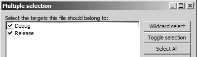

Labor, 9. hét: dinamikus tömbök II.
Czirkos Zoltán, Pohl László · 2019.08.24.
Dinamikus tömbök kezelése, sztringek dinamikus tömbökben.
Felkészülés a laborra:
- A pointerekről és sztringekről szóló előadás átismétlése.
- A dinamikus memóriakezelésről szóló előadás anyagának megértése.
A nagy házihoz adunk segédletként egy Debugmalloc nevű programot, amely a memóriakezelési hibák egy részét képes felfedezni. Erről bővebb leírást a Segédlet/Nagy házi menüpont alatt találsz: Debugmalloc. A mostani laborfeladat ennek az eszköznek a kipróbálása.
- Hozz létre egy projektet a szokásos módon a Code::Blocksban (File, New project stb.)
- Töltsd le a következő fájlt: debugmalloc.h. Másold be a projekted mappájába, a main.c fájl mellé:
- Add hozzá a fájlt a projektedhez. Ehhez előbb kattints jobb gombbal a projekt nevére a management ablakban:
- Aztán válaszd ki a fájlt, és kattints az okéra! Ellenőrizd, hogy tényleg be fog-e kerülni a programba (Debug és Release be van-e jelölve): 
- Végül ehhez kell jutnod:
Ha kész vagy, a helló világ programod írd felül az alábbi forráskóddal! Ez kettő memóriakezelési hibát tartalmaz. Látod, melyek ezek? Ha igen, akkor se javítsd még ki őket egyelőre!
#include <stdio.h>
#include <stdlib.h>
#include <string.h>
#include "debugmalloc.h"
int main(void) {
char txt[] = "hello";
char *p = malloc(strlen(txt) * sizeof(char));
strcpy(p, txt);
printf("TXT: %s\n", p);
return 0;
}Futtasd le a programot, és figyeld meg a Debugmalloc hibaüzeneteit! Javítsd ki a hibákat!
Gyakran látni nagyobb programokban az strdup() nevű függvényt. Ez nem szabványos, de szinte
mindenki megírja magának, mert nagyon hasznos. A feladata az, hogy a paraméterként kapott sztringről készítsen egy
másolatot, amelyiket dinamikusan foglalt területre tesz. A másolat helyét, azaz a dinamikusan foglalt karaktertömb
címét visszatérési értékként adja, és természetesen később fel kell szabadítani azt.
- Írj
masolat()nevű függvényt, amelyik ugyanígy működik! Például azstr = masolat("alma")sor hatására jöjjön létre a kért másolat, és kerüljön be annak címe azstrpointerbe. - Írj megjegyzést a függvény fölé, amelyben pár mondatban leírod, hogyan kell azt használni! (A nagy házi feladatban is minden függvényt dokumentálnod kell majd.)
- Mutass példát a függvény használatára! Ne feledkezz meg benne a tömb felszabadításáról!
Tipp
Figyeld meg jól a feladatkiírás str = masolat("alma") kifejezését! Ebben a függvényhívás után egy
értékadás történik: az str = ... kifejezésrészlet egy pointert tárol el. Ez az a pointer, amelyik
a függvény által lefoglalt területre mutat. Fontos, hogy itt nem sztring értékadás történik, azaz nem tömbök
közötti értékadás; egyszerűen csak egy pointert ráállítunk a létrejött tömbre.
Megoldás
#include <stdio.h>
#include <string.h>
#include <stdlib.h>
/* Dinamikusan foglalt területre másolja a paraméterként kapott
* sztringet. A másolat címével tér vissza. A kapott területet
* a hívónak fel kell szabadítania a free() függvénnyel. */
char *masolat(char const *str) {
/* milyen hosszú a sztring? */
int hossz = strlen(str);
/* dinamikus tömb foglalása, +1 a lezáró nullának */
char *uj = (char*) malloc((hossz + 1) * sizeof(char));
if (uj == NULL)
return NULL; /* :( */
/* sztring másolása, biztosan elfér a tömbbe */
strcpy(uj, str);
return uj;
}
int main(void) {
char *x = masolat("hello, dinamikus vilag!");
if (x != NULL) {
printf("%s\n", x);
free(x);
}
return 0;
}A string.h fájl strcat() függvénye sztringek összefűzésére való: az strcat(x, y) hívás
az x pointer által mutatott sztring végéhez fűzi az y sztringet. Ehhez az x által
mutatott tömbben elegendő helynek kell lennie, különben a függvény túlindexel. A helyet a hívónak kell biztosítania, ami
azért is kényelmetlen, mert neki is bajlódnia kell a sztringek hosszával, karaktertömbök méretével.
A mostani feladatod egy okosabb függvényt írni. Ezt x = hozzafuz(x, y) formában kell majd
használni. A dolga az, hogy egy meglévő, dinamikusan foglalt x sztringet nyújtsa meg akkorára, hogy
az y is hozzáfűzhető legyen, és tegye is meg a hozzáfűzést. Például:
char *x = masolat("alma"); /* az előző feladatból */
x = hozzafuz(x, "fa");
printf("%s\n", x); // almafa
free(x);Írd meg a függvényt! Tegyél megjegyzést fölé, amelyben leírod, mire való, és hogyan kell használni! Ügyel arra, hogy ez a függvény első paramétereként csak dinamikusan foglalt sztringet kaphat – ezt megemlítheted a megjegyzésben is.
Tipp
Vajon miért kell a függvénynek visszatérnie a dinamikusan terület címével? Azért, mert az átméretezés során
megváltozhat a memóriaterület helye a memóriában. Lehet, hogy az eredeti helyen nem fér el a nagyobb tömb, és
új jön létre, nagyobb mérettel. Az eredeti tömb pedig eltűnik, felszabadítja azt a függvény! Az előadáson már
találkoztál ezzel a realloc() függvény
kapcsán.
Megoldás
#include <stdio.h>
#include <string.h>
#include <stdlib.h>
/* az előző feladatból */
char *masolat(char const *str) {
char *uj = (char*) malloc((strlen(str) + 1) * sizeof(char));
strcpy(uj, str);
return uj;
}
/*
* Hozzáfűzi a 'mihez' pointer által mutatott
* dinamikusan foglalt sztringhez a 'mit' sztringet.
* Visszatér a dinamikusan foglalt terület címével,
* ami megváltozhatott, ezért a hívó be kell másolja
* azt az eredeti változóba: x = hozzafuz(x, ...).
* A hívó feladata a free()-t hívni a kapott tömbre.
*/
char *hozzafuz(char *mihez, char const *mit) {
int ujhossz = strlen(mihez) + strlen(mit);
char *uj = (char*) malloc((ujhossz + 1) * sizeof(char));
if (uj == NULL) return NULL;
strcpy(uj, mihez);
strcat(uj, mit);
free(mihez);
return uj;
}
int main(void) {
char *x;
x = masolat("korte");
x = hozzafuz(x, "fa");
if (x != NULL) {
printf("%s\n", x); // kortefa
free(x);
}
return 0;
}Írj függvényt, amely egy sztringet kap, és kivágja abból a paraméterként kapott két index közötti részt! Az első index az első olyan karakterre mutat, ami már kell, a második index pedig az első olyanra, ami már nem. Tehát balról zárt, jobbról nyílt intervallumról van szó. Ha az első index kisebb 0-nál, akkor vegye a függvény 0-nak azt; ha a második nagyobb a sztring hosszánál, akkor pedig azzal megegyezőnek. Térjen vissza a függvény egy dinamikusan foglalt sztringgel, amelyik a kivágott részt tartalmazza!
Írj teszt programrészt is – próbáld ki a függvényt különböző bemenetekre! Pl. így:
| 0 | 1 | 2 | 3 | 4 | 5 | 6 | 7 | 8 | 9 | 10 | 11 |
| h | e | l | l | o | , | v | i | l | a | g |
Ne feledkezz meg a függvény fölé, megjegyzésben írt dokumentációról! Mire jó a függvény? Milyen paraméterei vannak? Milyen kötelezettségei vannak a hívónak?
Megoldás
Az alábbi megoldás a memcpy() függvényt használja az egyszerűség kedvéért.
Ez tetszőleges adatot másol, memcpy(hova, honnan, hány bájtot). Azért volt rá
szükség, mert a kivágandó sztringrészlet végén nincs lezáró nulla, tehát a strcpy
nem lett volna alkalmas erre a feladatra. Ezért kell a lezáró nullát is az új sztringbe külön
betenni.
Ciklussal elvégezve a másolást, ugyanolyan jó megoldáshoz lehet jutni.
#include <stdio.h>
#include <string.h>
#include <stdlib.h>
/*
* Előállít egy új sztringet, amely az 'eredeti' nevű sztring
* közepéből van kivágva, [mettol, meddig) balról zárt, jobbról
* nyílt intervallumban. A hívó a free() függvénnyel fel kell
* szabadítsa a kapott tömböt.
*/
char *reszsztring(char const *eredeti, int mettol, int meddig) {
int regihossz = strlen(eredeti);
if (mettol < 0)
mettol = 0;
if (meddig > regihossz)
meddig = regihossz;
int ujhossz = meddig - mettol;
char *ujsztring = (char*) malloc((ujhossz + 1) * sizeof(char));
if (ujsztring == NULL)
return NULL;
memcpy(ujsztring, eredeti + mettol, ujhossz * sizeof(char));
ujsztring[ujhossz] = '\0';
return ujsztring;
}
int main(void) {
char *uj = reszsztring("hello reszsztring", 3, 9);
if (uj != NULL) {
printf("[%s]\n", uj);
free(uj);
}
return 0;
}Írd meg az előző feladat függvényét fordítva: az indexekkel jelzett részt a függvény hagyja el, csak a többi maradjon! Az eredeti sztring itt is legyen változatlan, a függvénynek egy új sztringet kell előállítania.
A visszatérési érték ugyanúgy legyen egy dinamikusan foglalt sztring. Mutass példát a függvény használatára! Ne felejtsd el a kapott dinamikus tömböt felszabadítani!
| 0 | 1 | 2 | 3 | 4 | 5 | 6 | 7 | 8 | 9 | 10 | 11 |
| h | e | l | l | o | , | v | i | l | a | g |
Írd meg a szokásos megjegyzést a függvény fölé! Mire való? Hogyan kell paraméterezni? Kell a hívónak is emlékeznie valamire?
Megoldás
A memcpy() függvénnyel kapcsolatban lásd az előző feladat mintamegoldását.
Itt a működés a következő:
- Átmásoljuk az új helyre a sztring elejét a
memcpy()függvénnyel. Ennek a végén egyelőre nincs lezáró nulla. - Ezek után folytatólagosan (
mettolkarakterrel arrébb kezdődően) átmásoljuk az eredeti sztring végét. Az eredetinek a végén van lezáró nulla, és odáig kell menni, ezért ehhez astrcpy()is jó. Sőt ez lezáró nullát is tesz, úgyhogy készen is vagyunk.
#include <stdio.h>
#include <string.h>
#include <stdlib.h>
/*
* Előállít egy új sztringet, amely az 'eredeti' nevű sztring
* eleje és vége kerül bele; a közepén lévő részt, a [mettol, meddig)
* tartó karaktersorozatot elhagyva belőle. A hívó a kapott
* dinamikus tömbre meg kell majd hívja a free() függvényt.
*/
char *kivag(char const *eredeti, int mettol, int meddig) {
int regihossz = strlen(eredeti);
if (mettol < 0)
mettol = 0;
if (meddig > regihossz)
meddig = regihossz;
int ujhossz = regihossz - (meddig - mettol);
char *ujsztring = (char*) malloc((ujhossz + 1) * sizeof(char));
if (ujsztring == NULL)
return NULL;
memcpy(ujsztring, eredeti, mettol * sizeof(char));
strcpy(ujsztring + mettol, eredeti + meddig);
return ujsztring;
}
int main(void) {
char *uj = kivag("hello vilag kivagott sztring", 4, 8);
if (uj != NULL) {
printf("[%s]\n", uj);
free(uj);
}
return 0;
}A feladat az eddigiekhez hasonló: a függvény sztringeket kap, és egy új sztringet kell előállítania.
Most azonban nem kivágni kell egy darabot a sztringből, hanem beszúrni valahova egy új részletet.
Például a beszur("hello!", 5, ", vilag") hívás eredménye a hello, vilag!
sztring kell legyen: az o betű és a felkiáltójel közé lett beszúrva a másik sztring.
Megoldás
Itt is lehetne a memcpy()-t használni; lásd az előző feladatokat.
Ez a mintamegoldás egy másik ötletet mutat. A strncat(mihez, mit, n) függvény
a mihez sztringhez fűzi a mit sztring elején lévő, legfeljebb n
darab karaktert. Utána pedig mindig tesz lezáró nullát. A lépések ezzel a következők:
- A karaktertömb elejére lezáró nullát teszünk, így az üres sztringgé válik.
- Az
strncat()függvénnyel átmásoljuk az eredeti sztring elejét, abbólhovadarab karaktert. Utána lezáró nulla kerül, mert azstrncatmindig tesz olyat. - Az így kapott sztringhez fűzzük a
mitsztringet; lezáró nulla itt is lesz. - Az utolsó
strcat()hívás az eredeti sztring végét fűzi az új sztringhez, megint lezárva azt a szükséges'\0'-val.
#include <stdio.h>
#include <string.h>
#include <stdlib.h>
/*
* Beszúrja az 'eredeti' sztring belsejébe, a 'hova'
* pozícióba, a 'mit' sztringet. Az így kapott,
* dinamikusan foglalt sztringgel tér vissza, amelyre
* a hívónak a free() függvényt meg kell majd hívnia.
*/
char *beszur(char const *eredeti, int hova, char const *mit) {
int ujhossz = strlen(eredeti) + strlen(mit);
char *ujsztring = (char*) malloc((ujhossz + 1) * sizeof(char));
if (ujsztring == NULL)
return NULL;
ujsztring[0] = '\0';
strncat(ujsztring, eredeti, hova);
strcat(ujsztring, mit);
strcat(ujsztring, eredeti + hova);
return ujsztring;
}
int main(void) {
char *uj = beszur("hello!", 5, ", world");
if (uj != NULL) {
printf("[%s]\n", uj);
free(uj);
}
return 0;
}